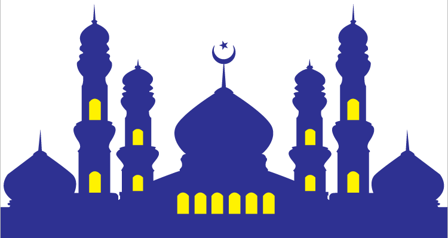

Berita Update
kesehatan Berpuasa, 15 April,2021 by Rafshin

Puasa menjadi kewajiban bagi umat Muslim di seluruh penjuru dunia. Ternyata, kegiatan menahan lapar dan dahaga yang diwajibkan selama satu bulan ini memiliki banyak manfaat untuk tubuh, seperti menyehatkan jantung, ginjal, hati dan beberapa organ penting lain, juga melancarkan peredaran darah. Tak hanya itu, puasa juga mejauhkan diri dari segala pola makan dan gaya hidup yang tidak baik. Sejatinya, puasa adalah tindakan sukarela untuk menahan nafsu makan, minum, perbuatan buruk, dan dari segala hal yang bisa membuat puasa batal untuk periode waktu tertentu. Kegiatan ini umumnya dilakukan sebagai bagian dari ibadah keagamaan atau alasan kesehatan tertentu..
Populer
Manfaat Kesehatan bagi Metabolisme Tubuh Terganggunya sensitifitas insulin, obesitas, peningkatan kadar gula darah (hiperglikemi),Puasa dalam Islam juga sering disebut shaum yang merupakan salah satu ibadah yang telah dicontohkan oleh Rosululloh SAW..
puasa berarti tidak makan maupun minum selama lebih dari 12 jam. Padahal, tubuh tetap beraktivitas dan membutuhkan asupan cairan.